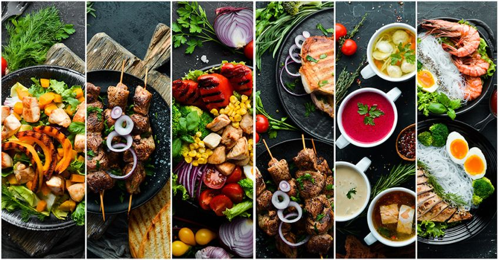

Táplálkozási szempontok
- Energiapótlás: A vízilabda magas energiabefektetést igényel. A teljes kiőrlésű gabonák, gyümölcsök és zöldségek biztosítják a hosszú távú energiát az edzésekhez és mérkőzésekhez.
- Fehérjefogyasztás: Az izmok helyreállításához és erősítéséhez fontos a fehérje. A sovány húsok, halak, tojás, hüvelyesek és tejtermékek biztosítják a szükséges tápanyagokat, különösen edzés után.
- Folyadékbevitel: A vízilabdázók számára elengedhetetlen a hidratáció, mivel a vízben is jelentős mennyiségű folyadékot veszítenek. Fontos a víz és elektrolitok rendszeres pótlása edzés közben és után.
- Mikrotápanyagok: A vas, kalcium, magnézium és vitaminok, például a C- és D-vitamin, hozzájárulnak az immunrendszer erősítéséhez, az izomműködés fenntartásához és a csontok egészségének megőrzéséhez.
